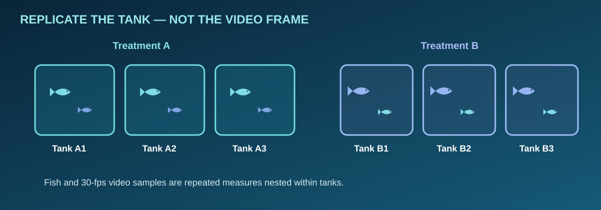

Experimental interventions and tank-level inference
Source:vignettes/articles/experimental-design.Rmd
experimental-design.RmdFrom events to replicable inference
High-frequency video produces many observations, but a 30-fps recording does not create 30 independent biological experiments per second.

Schematic replication design; sample sizes shown are illustrative only.
Define the experimental unit
A treatment assigned to a whole tank usually has the tank as its independently randomized unit. Fish observed repeatedly within that tank—and frames repeatedly observing each fish—are nested measurements.
If tank A gets one feeding protocol, and tank B gets another, hundreds of fish detections do not create hundreds of independent treatment replicates.
Register experimental timing
library(aquaTrajectories)
event <- aqt_event_table(data.frame(
session_id = "S01",
event_id = "routine_event",
start_s = 3,
end_s = 4
))
x <- aqt_simulate_tracks(n_fish = 5, n_frames = 200)
kin <- aqt_kinematics(x, max_gap_s = 0.1)
aligned <- aqt_align_events(kin, event)This is a synthetic code demonstration, not an observed effect. Real interventions need externally logged start/end times and synchronized clocks.
Event analysis functions
-
aqt_event_epoch_summary(): describe supported measurements inside researcher-defined pre/post windows. -
aqt_design_audit(): inspect whether the tank-level design meets declared requirements. -
aqt_tank_event_contrast(): compare tank-level epoch changes, resampling independent tanks rather than frames. -
aqt_functional_event_grid(): create time-relative observed curves without bridging unsupported gaps. -
aqt_functional_tank_contrast(): descriptively compare curves at the tank level. -
aqt_hierarchical_event_fit(): optional nested tank/fish statistical model.
What the software cannot infer by itself
The code does not prove that treatment allocation was randomized, that an analyst was blinded, that an intervention caused the observed difference, or that frame-level posterior state probabilities are independent replicates.
Source detail: source protocol, source protocol and source protocol.